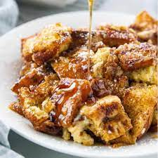

French Toast Casserole

Description
Warm, Sweet, and Fun: all good woods to describe a delicious breakfast dish,
and thats what you have with a French Toast Casserole. Another simple yet
delicious dish that can be changed with addition of things like fresh fruit,
different syrups, or even placed alongside a plate of bacon.
Ingredients
- 1 cup brown sugar
- 1/2 cup butter
- 1 loaf crusty French bread, cut into bite-sized pieces
- 2 cups milk
- 6 eggs
- 2 teaspoons vanilla extract
- 1 pinch ground cinnamon, or to taste
- 1 tablespoon brown sugar, or as needed
Cooking Directions
- Grease a 9x12-inch baking dish.
- Stir 1 cup brown sugar and butter together in a saucepan over
medium-low heat until butter melts and sugar dissolves into butter,
2 to 4 minutes. Pour into prepared baking dish and spread a 1 1/2-
to 2-inch layer of bread pieces over the top.
- Beat milk, eggs, and vanilla extract together in a bowl; pour milk mixture
over bread into the baking dish and move bread as necessary to ensure all
bread is absorbing liquid. Sprinkle cinnamon over the top. Cover the dish
with plastic wrap and refrigerate, 8 hours to overnight.
- Preheat oven to 450 degrees F (230 degrees C). Remove and discard plastic
wrap from baking dish and sprinkle remaining brown sugar over the top of the
bread mixture.
- Bake in the preheated oven until browned and bubbling, about 30 minutes.